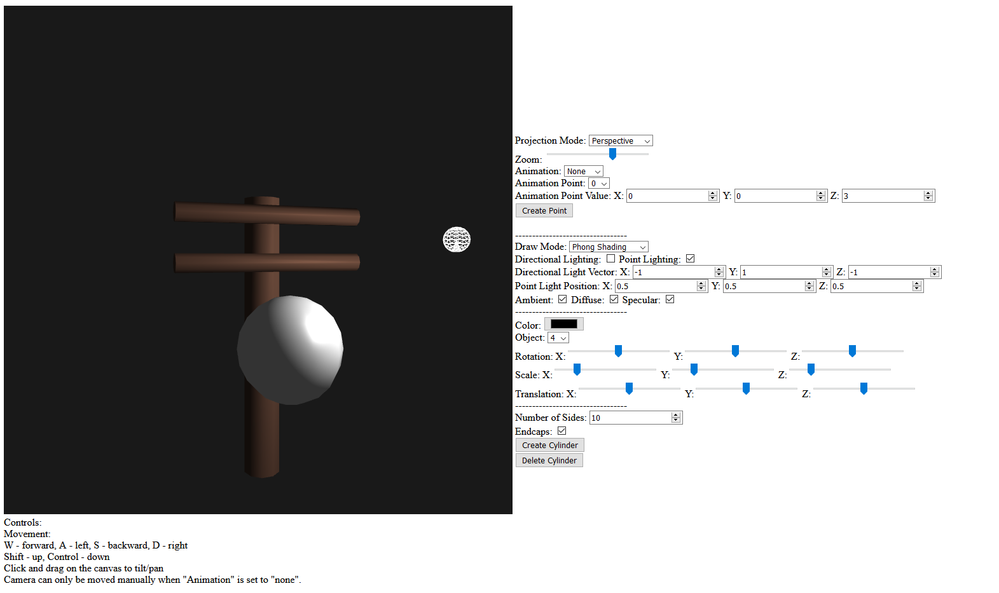
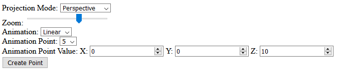
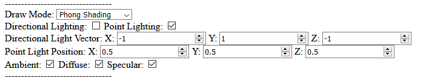
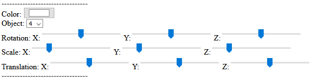
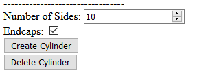

Autumn Moulios (amoulios)
CSE 160 Programming Assignment 4
5/23/2021
Assignment 4 Driver HTML Page
Javascript Code
Cylinder Class
Sphere Class
Camera Class
By default my power lines model is displayed in the 3D scene, and can be edited using the ui.
There's also a sphere in the scene to more easily see lighting effects.
A wireframe sphere is used to represent the point light.

Camera Movement:
The camera's position can be controlled used the W, A, S, and D keys for moving forward, left, backward, and right respectively.
The shift and control keys will also move the camera up and down respectively (regardless of the camera's looking direction).
The camera can be tilted/panned by clicking on the canvas and dragging.
There's a slider to affect the zoom of the camera.
A dropdown menu allows an automatic camera movement animation to be played (cubic, linear, or none).
The points used for this animation can edited using the Animation Point Value number inputs, and different ones are selected using the Animation Point dropdown menu.
The "Create Point" button will append a new point to the animation at [0, 0, 0], which can then be edited.

Lighting:
There are four Draw Modes: WireFrame (No Shading), and Solid (Flat Shading), Gouraud (Smooth Shading), and Phong (Smooth Shading). These affect the whole scene when chosen.
There are options to toggle both lighting types and all lighting effects.
There are also options to choose the direction of directional lighting, or the position of the point light.

Transformations:
The Color menu will change the color of the selected object.
The "Object" dropdown menu allows the user to select one of multiple objects in the 3D scene and transform it using the sliders below.
The first row handles rotations around the x, y, and z axes respectively.
The second row handles the scale along these axes in the same order.
The third row handles translation along these axes.

Type a number into the first box (e.g. 5) to define how many sides a created shape will have.
If you decide not to have endcaps on a created cylinder, deselect the Endcaps button.
Clicking the "Create Cylinder" button will make a cylinder with the user's specified attributes/transformations:
Clicking the "Delete Cylinder" button will remove the cylinder selected in the "Cylinder" dropdown menu.
